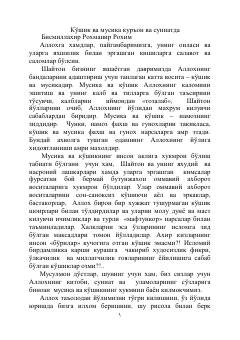

QVQo'shiq va musiqaning Islom dinidagi hukmi oyat va hadislar asosida bayon qilingan risola.
Mazkur risolada qo'shiq va musiqaning Islom dinidagi hukmi Qur'on oyatlari, hadislar hamda ulamolarning qarashlari asosida bayon qilingan. Muallif musiqaning inson qalbiga va ma'naviyatiga ta'siri, uning turlari hamda halol va harom qilingan jihatlarini atroflicha tushuntirib bergan. Kitob umumiy kitobxonlar va dinimiz ahkomlarini o'rganishni istovchilar uchun mo'ljallangan.